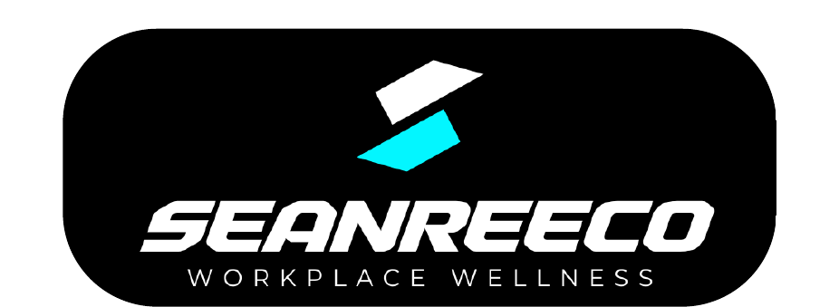

SEANREECO Coaching · April 2026 · 12 Spots Only

I only take on 12 private coaching clients per month — April applications are open now.
Applications close at the end of this week. After that, you go on the waitlist for May.
If you have been thinking about making a change, this is the window. Apply now and I will review your situation personally.
— Sean
I help men over 35 get their body back. Not the watered-down version. The version that actually looked like you.
You are knackered by 2pm. The shirts are pulling tight in the wrong places. You catch yourself in a photo and do a double-take.
You have built a career. You have a family. Most people looking at your life would call it a success. But there is this one area — your body, your energy, your health — where you have been quietly losing ground for years, and the longer it goes, the harder it gets to ignore.
Maybe you are avoiding the beach. Declining things you would have jumped at ten years ago. Looking at your kids and feeling a quiet dread about whether you are going to be the dad who keeps up with them, or the one who sits on the sideline. Maybe you just feel like you are becoming your father. And you swore you never would.
Here is what I know after 17 years of coaching men: the guys who come to me in their late 30s and 40s are almost always the same person. Smart. Driven. Successful in every other area of life. And genuinely frustrated they cannot crack this one.
Not because they are lazy. Not because they do not care. Because the fitness industry was not built for them. The programs, the meal plans, the advice — none of it was designed for a man running at your pace, under your level of pressure, with your schedule.
What you need is a system built specifically for where you are now — your age, your hormones, your schedule, and your actual goals. Not a template some 26-year-old ran.
That is what the 16-Week Executive Rebuild is.
What this actually produces.
My clients are not athletes. They are busy men who committed to a process and followed through. These are real results from real people who were exactly where you are now.


A busy professional who had tried and failed before. Eight weeks in, he was unrecognisable.
Six weeks. That is all it took before Steve felt better than he had in years.
The results in the first eight weeks alone were more than Josh had achieved in two years of going it alone.
The demographic changes. The system does not. When you follow it, the weight comes off, the muscle comes back, and the energy returns. Every time.
"I feel more energetic and confident, both at work and at home."
"The changes are simple and they actually stick. I never felt like I was suffering."
"My only regret is that I did not start this five years ago."
That last one is the one I hear the most. Do not let it be yours.
Who I am.
My name is Sean Stuart. I have been a personal trainer for 17 years. I have owned my own studios, run thousands of sessions, and coached men and women of all ages and backgrounds.
I now run SEANREECO Coaching entirely online and work with a small number of private clients at a time — because the only way to get the result I am known for is by being genuinely invested in each person I take on.
I am selective about who I work with. Not to be precious about it. Because your result is my reputation.
This is a private 1-on-1 coaching program. I am selective about who I take on.
This will not work for you if...
- You want to use your schedule as a reason not to take care of yourself
- You are not willing to follow a structured plan and check in consistently
- You do not have access to a commercial gym or a well-equipped home gym
- You are still deciding whether you actually want this
But if you are...
- A man over 35 who used to be in shape and is sick of watching it slip
- Ready to drop 10 to 20kg and rebuild the muscle lost over the last decade
- Running a demanding career but finally ready to make your health non-negotiable
- Someone who respects a structured process and wants a clear blueprint
- Done with trial and error and ready to invest in something that works
Then keep reading. This is exactly what I built this for.
The 16-Week Executive Rebuild.
I do not hand you a program and wish you luck. I build a system around your schedule, your environment, your specific body — and then I stay in it with you every week until the result is locked in.
Instead of one long phase that plateaus at week six, I run this in 6-week cycles — the same method used by elite physique coaches to keep the body responding through the full 16 weeks.
Fat Loss + Muscle Rebuild
Hormone Reset
This 6-week cycle repeats across the full 16 weeks — keeping your body responding and your results compounding.
This is where the weight comes off and the muscle starts coming back. Your custom training and nutrition plan is loaded into your private app. You open it and execute. I track your daily checkpoints for water, steps, and sleep — the fundamentals most busy men have quietly let slip.
You can track your food in MyFitnessPal where I see exactly what you are eating, or follow the exact meal blueprint I give you and skip counting altogether. Both work.
Within two weeks, most clients notice their energy stabilising and the initial weight dropping. By week four, the system is running. You are not relying on willpower.
The thing most programs skip — and exactly why most programs stop working. After five weeks pushing hard, I bring you to maintenance calories for one week. Not a rest week. A deliberate metabolic and hormonal reset. This is why you keep getting results at week 10 and week 14 instead of hitting the wall at week six.
The cycle repeats and builds. I fine-tune the variables based on your weekly check-in data. By week 16, the habits are automatic. The confidence is back. The energy is consistent.
You are not running a program anymore. You are running a higher-capacity version of yourself.
What is included, every week, for 16 weeks.
| What you get | What it actually means |
|---|---|
| ✓ Custom training plan | Built for your schedule, your gym, and your goals. Not a template. |
| ✓ Custom meal plan and macros | Follow the blueprint exactly, or track flexibly in MyFitnessPal. No calorie counting required if you do not want it. |
| ✓ Private coaching app | Your training, nutrition, and daily checkpoints all in one place. Open it and execute. |
| ✓ Mid-week text check-in | A quick check halfway through the week to catch any issues before they compound. |
| ✓ Weekly video check-in | I review your data, your progress, and give you specific feedback every single week. Not a generic response. Actual coaching. |
| ✓ Direct messaging access | Ask me anything, at any point. No waiting for a scheduled call. |
| ✓ Daily habit checkpoints | Water, steps, sleep. The small things that compound into the big result. |
My Commitment to You
I do not offer a generic money-back guarantee. I only work with men who are committed to the process.
What I will commit to: if you complete every workout, hit your nutrition targets, and check in with me every week — and you do not see significant changes after 16 weeks — I will keep coaching you for free until you do.
The only way you fail is if you quit. And if you are the kind of man reading this, that is not in your vocabulary.
The risk is not in starting. The risk is in waiting another year and being exactly where you are now.
The investment.
I keep my roster capped at 12 private clients so each one gets real attention, real adjustments, and real results.
$250 per week for a fully custom plan, weekly video coaching, and direct access every day.
After 16 weeks, you can roll into a month-to-month maintenance phase. No lock-in. Cancel anytime.
Most men spend more than $250 a week on things actively making this problem worse.
Questions.
Do I need to be near Sydney?
No. Everything is online, through your private app. Works around your location and gym setup.
What if I travel a lot for work?
That is exactly who this is built for. The training and nutrition adapts to hotel gyms, flight schedules, and weeks where everything goes sideways.
How much time does this take each week?
Three to four sessions a week, 45 to 60 minutes each. No two-hour gym sessions.
I have tried programs before and they did not work. Why is this different?
Because this is a coaching relationship, not a program. I am reviewing your data every week, adjusting the plan, and solving problems before they become reasons to quit. A template cannot do that.
What if I am not accepted?
If I do not believe I can get you the result, I will refund your $500 deposit immediately and tell you exactly what to work on.
What happens after week 16?
The system is running. You can continue on a month-to-month retainer or step back knowing the habits are locked in. Most clients choose to stay.
You have been putting this off for a while. You know you have. Every month it gets a little harder to shift the weight, a little harder to find the energy.
The application takes five minutes. The deposit is fully refundable if you are not accepted. There is no logical reason to wait another month.
Step 1. Click the button below to go to the application page.
Step 2. Fill out the short application form.
Step 3. Place a fully-refundable $500 deposit to hold your spot in the review queue.
I will review your application personally. If I do not believe I can get you the result, I will refund your deposit immediately. If you are the right fit, I will message you directly.
— Sean
P.S. The men who get the best results apply the moment they realise they need it. Not the ones who bookmark the page and come back in three weeks to find it full. If your gut is telling you this is exactly what you need — trust that. The deposit is refundable if you are not accepted.
P.P.S. If this month is already full, you will be first in line for May. Either way, you are moving forward.